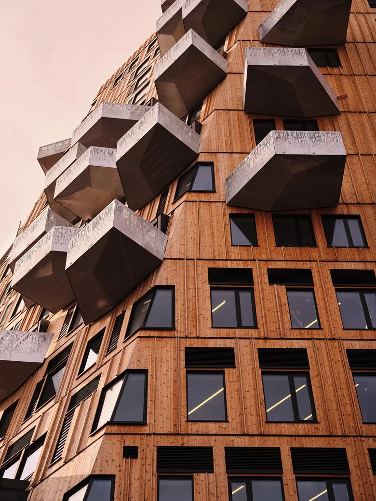
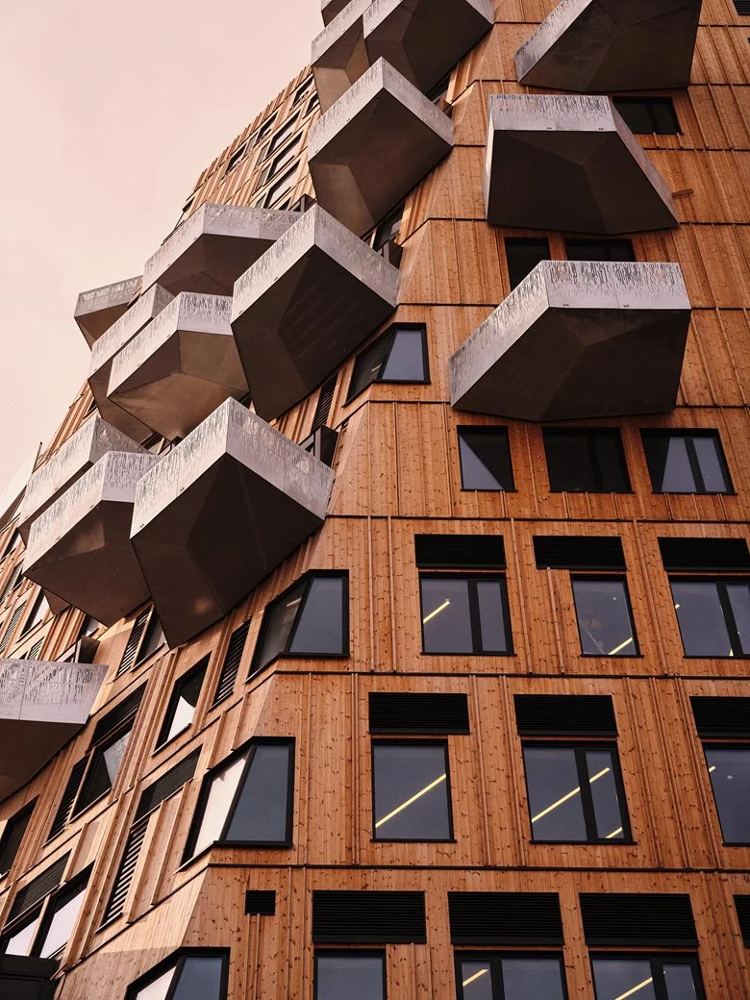

Miomojo è un'azienda che produce accessori cruelty-free e sostenibili, con l'obiettivo di
coniugare etica ed estetica. La missione di Miomojo è creare prodotti che rispettino il
pianeta e tutti gli esseri viventi, contribuendo a un mondo più etico e sostenibile.
L'azienda è una Società Benefit e una B Corp certificata, impegnata a innovare nel settore della
moda e degli accessori senza compromessi sul rispetto per l'ambiente e gli animali.
Miomojo si impegna a mantenere una catena di approvvigionamento corta e trasparente,
producendo principalmente in Italia e collaborando con fabbriche selezionate in Asia per alcunebr
linee di prodotti. Questo garantisce condizioni di lavoro sicure ed equitabili. L'azienda sostiene
anche cause sociali e ambientali, devolvendo il 10% del valore di ogni acquisto online e il 10% del
suo utile netto proveniente dal business offline a progetti per la tutela animale e altre cause
benefiche.
“La gentilezza verso il pianeta e ogni essere vivente deve essere la nostra
priorità assoluta, motivo per cui lavoriamo instancabilmente per promuovere
un'alternativa etica e di qualità.”
Miomojo utilizza una varietà di materiali innovativi e sostenibili per la produzione dei suoi
accessori.
Tra questi vi sono materiali organici derivati da cactus, mele, ananas, e biopolioli ottenuti da
coltivazioni di cereali no-food e OGM-free.
Inoltre, l'azienda impiega R-PET riciclato da bottiglie di plastica e nylon riciclato da reti da
pesca,
contribuendo alla riduzione dell'impatto ambientale e alla salvaguardia degli oceani.
“Da materiali come le bucce di mele, il mais, i cactus e le reti da pesca
abbandonate, Miomojo crea tessuti pregiati e resistenti che rivoluzionano il
concetto di moda sostenibile.”


 
